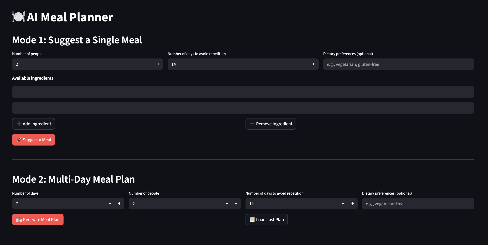

AI-Powered Meal Planning Assistant

Portfolio Best Practices
This is a portfolio project demonstrating RAG implementation and full-stack AI development. Key highlights:
- End-to-end RAG pipeline with semantic search
- PostgreSQL + pgvector for production-grade vector storage
- Structured outputs using Pydantic models
- Docker-based deployment with service orchestration
- Clean separation of concerns (UI, business logic, data layer)
- Scalable architecture supporting 2M+ recipe embeddings
Project Summary
Project: MealPrep - AI Meal Planning Assistant
Repository: GitHub
Category: Personal AI Application
Key Features:
- Semantic search across 2.2M+ recipes using RAG
- Single meal suggestions based on available ingredients
- Multi-day meal plan generation with shopping lists
- Real-time meal regeneration with diversity enforcement
- PostgreSQL database with meal plan persistence
- Built from scratch in 1 week
An intelligent meal planning application that combines Retrieval-Augmented Generation (RAG) with Large Language Models to deliver personalized meal suggestions and automated weekly meal plans based on available ingredients and dietary preferences.
Challenge
Planning meals daily is time-consuming and often results in repetitive choices. Existing meal planning apps lack:
- Intelligent suggestions based on what you already have
- True variety - they suggest similar meals repeatedly
- Flexibility - rigid plans that don't adapt to rejections
- Semantic understanding - can't find similar recipes or adapt to preferences
The goal was to build an AI-powered solution that understands context, ensures variety, and learns from user preferences while leveraging a massive recipe database.
Our Approach
Developed a full-stack RAG application with two distinct modes:
Mode 1: Single Meal Suggestion
- Ingredient-based semantic search through 2M+ recipes
- RAG pipeline retrieves similar recipes as context
- LLM (OpenAI GPT-5-mini) generates personalized suggestions considering dietary preferences
- Accept/reject workflow with automatic diversity enforcement
Mode 2: Multi-Day Meal Planning
- Automated generation of X day meal plans
- Individual meal acceptance/rejection with on-the-fly regeneration
- Shopping list aggregation from accepted meals
- Plan persistence with database storage
Technical Implementation:
- Embedded 2.2M recipes using sentence-transformers (text-embedding-3-small)
- Vector similarity search with pgvector and PostgreSQL
- Structured outputs using Pydantic for reliable parsing
- Prompt engineering for diversity and creativity
Results & Impact
- Successfully processes 2.2M+ recipe embeddings
- Sub-second semantic search response times
- Reliable structured outputs using Pydantic validation
- Meal plan generation in under 30 seconds for 7-day plans
- Docker deployment with persistent storage
- Clean architecture enabling easy feature additions
Solution Overview
Architecture
┌─────────────┐
│ Streamlit │ UI Layer
│ UI │
└──────┬──────┘
│
┌──────▼──────────┐
│ Meal Service │ Business Logic
│ (RAG Flow) │
└──────┬──────────┘
│
┌──────▼──────────┐ ┌─────────────┐
│ Vector Store │────▶│ PostgreSQL │
│ (pgvector) │ │ + pgvector │
└─────────────────┘ └─────────────┘
│
┌──────▼──────────┐
│ Claude API │ LLM Generation
│ (Sonnet 4) │
└─────────────────┘
RAG Pipeline
-
Indexing Phase:
- Load 2.2M recipes from Kaggle dataset
- Generate embeddings using sentence-transformers
- Store in PostgreSQL with pgvector extension
-
Retrieval Phase:
- User inputs ingredients
- Semantic search finds similar recipes (cosine similarity)
- Top-k results retrieved as context
-
Generation Phase:
- Similar recipes passed to OpenAI as system context
- Prompt includes ingredients, dietary preferences, excluded meals
- Structured output ensures consistent parsing
-
Diversity Enforcement:
- Recent meals tracked in database
- Rejected meals added to exclusion list
- Prompt explicitly instructs variety across cuisines and methods
Tech Stack
AI & Machine Learning
- OpenAI GPT-5-mini for meal generation
- sentence-transformers (text-embedding-3-small) for embeddings
- pgvector for vector similarity search
- Custom RAG pipeline implementation
Backend
- Python 3.12
- Streamlit for rapid UI development
- PostgreSQL with pgvector extension
- Pydantic for data validation
- psycopg2 for database connectivity
Data Processing
- Pandas for recipe data manipulation (added diet classifications)
- 2.2M recipe dataset from Kaggle
Infrastructure
- Docker & Docker Compose for service orchestration
- uv for fast Python package management
- python-dotenv for configuration management
Development
- Git for version control
- Structured project layout with separation of concerns
Additional Context
- Timeline: 1 week
- Team Size: Solo project
- Role: Full-stack AI Engineer
- Dataset: 2.2M+ recipes from Kaggle
- Learning Focus: Production RAG implementation, vector databases, structured outputs
Future Enhancements:
- Shopping list integration with grocery apps
- MCP (Model Context Protocol) integration with growing RAG database (see below)
- Advanced text chunking for recipe processing
- PDF cookbook parsing
- Nutritional tracking
- Calendar integration for meal scheduling
Learnings & Insights
Technical Challenges Solved:
- Scale: Efficiently embedding and searching 2M+ recipes
- Parsing Reliability: Structured outputs improved parsing
- Diversity: Prompt engineering crucial for non-repetitive suggestions
- State Management: Streamlit session state for complex workflows
Key Takeaways:
- RAG quality depends heavily on retrieval strategy
- Prompt engineering is as important as model choice
- Structured outputs essential for production reliability
- Docker simplifies local development and deployment
-
Let's have a virtual coffee together!
Want to see if we're a match? Let's have a chat and find out. Schedule a free 30-minute strategy session to discuss your AI challenges and explore how we can work together.